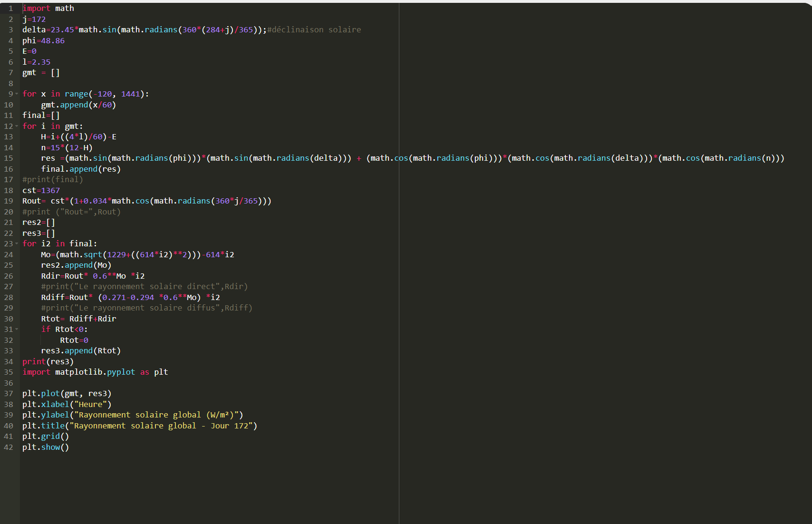
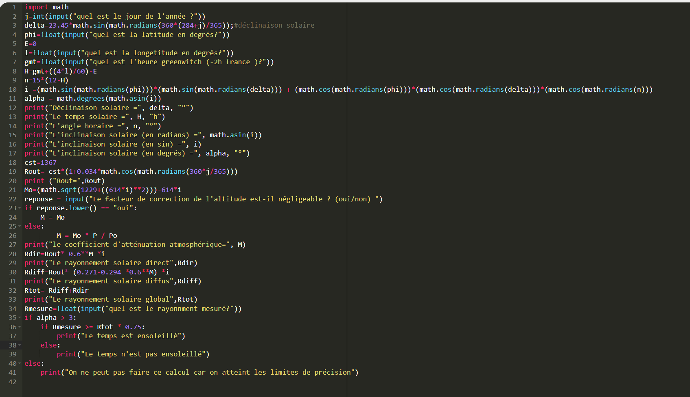
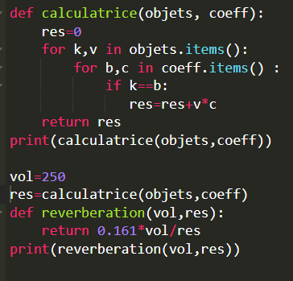

PROGRAMME 01
Rayonnement solaire
Calcul du rayonnement solaire global au cours d'une journée et représentation graphique des résultats.
Modélisation, programmation et analyse numérique appliquées au projet architectural.
J'ai développé trois programmes Python permettant d'effectuer différents calculs scientifiques liés au bâtiment.

Calcul du rayonnement solaire global au cours d'une journée et représentation graphique des résultats.

Programme permettant de calculer le rayonnement solaire à partir de différents paramètres : date, latitude, longitude et heure.

Calcul de l'absorption acoustique et du temps de réverbération d'une pièce à partir des caractéristiques des matériaux.
Création d'une maquette numérique et étude de l'orientation du bâtiment.
Calcul scientifique, traitement de données et graphiques.
Création et mise en forme de mon site de stage.
Rédaction et mise en forme de documents scientifiques.
Word, Excel et PowerPoint pour organiser et présenter les données.
Modéliser
Calculer
Analyser
Présenter